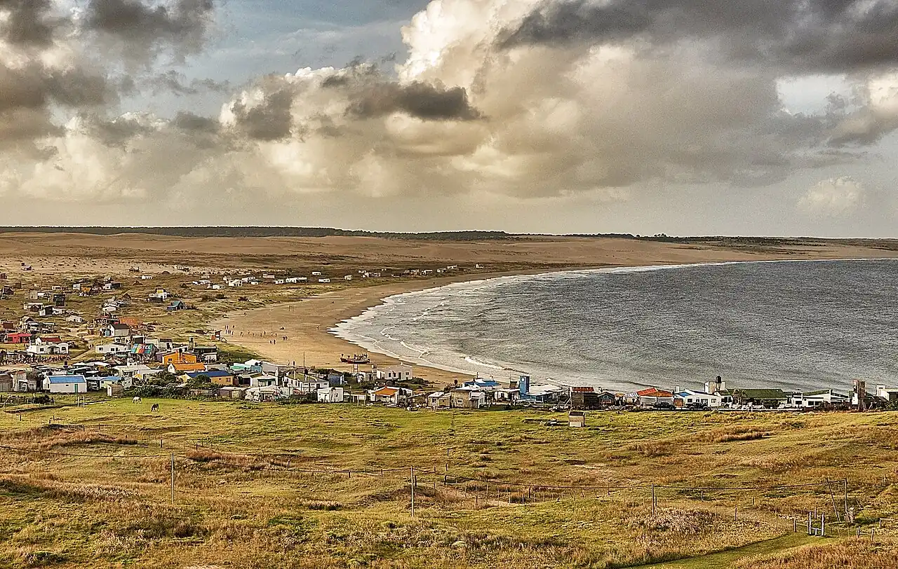

Cabo Polonio
Rocha, Uruguay · surf, baignade

Village sans route ni réseau électrique, au milieu des dunes d’un parc national, qu’on rejoint en camion tout-terrain. Deux plages s’ouvrent de part et d’autre du cap, et une colonie de lions de mer occupe les rochers au pied du phare.
- Lieu
- Rocha, Uruguay
- Niveau
- Intermédiaire
- Activités
- surf, baignade
- Type d'eau
- Mer / océan
- Coordonnées
- -34.40, -53.80 (position approximative du secteur)
Dangers à connaître
- Courants d’arrachement sur les plages exposées.
- Eau fraîche de l’Atlantique Sud, surtout hors été.
Le conseil d'Ocean Buddy
Selon le vent, l’une des deux plages est plus abritée : jette un œil aux deux avant de te mettre à l’eau.
Ouvrir dans Ocean Buddy Télécharger sur l'App Store
Source : Fiche Ocean Buddy · septembre 2026 · à vérifier localement.